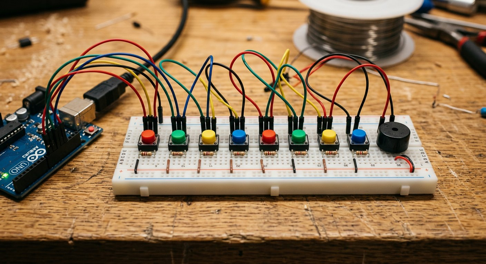

Qué cubre esta guía
- Cómo genera sonido Arduino: la función tone()
- Buzzer activo vs pasivo: por qué la diferencia importa
- Lista de materiales y costos de referencia
- Conexión de hardware: botones con resistencia pull-down
- Tabla de frecuencias de notas musicales
- Código Arduino: piano básico de 8 notas
- El problema del rebote de contacto (debounce)
- Código Arduino: reproducir melodías automáticas
- Control de volumen con PWM y transistor
- Problemas comunes y solución de errores
- Upgrade: parlante pasivo, pantalla y matriz de botones
- Mejoras posibles y siguientes pasos
- Preguntas frecuentes
Cómo genera sonido Arduino: la función tone()
Todo sonido audible es, físicamente, una onda de presión que vibra a una determinada frecuencia — medida en Hertz (Hz), ciclos por segundo. El oído humano percibe como sonido las vibraciones aproximadamente entre 20 Hz y 20.000 Hz, y las notas musicales corresponden a frecuencias específicas y estandarizadas dentro de ese rango: el La central del piano, por ejemplo, vibra exactamente a 440 Hz.
Arduino incluye una función nativa pensada exactamente para esto: tone(pin, frecuencia, duracion). Internamente, esta función usa uno de los temporizadores de hardware del microcontrolador para generar una onda cuadrada a la frecuencia solicitada en el pin indicado — es decir, alterna ese pin entre HIGH y LOW a una velocidad tan precisa como para producir vibraciones dentro del rango audible. Cuando esa señal llega a un buzzer pasivo, su diafragma vibra siguiendo exactamente esa frecuencia, produciendo el tono correspondiente.
Los tres parámetros de la función son:
- pin: el pin digital donde está conectado el buzzer.
- frecuencia: la frecuencia deseada en Hertz — este es el número que determina qué nota suena.
- duración (opcional): tiempo en milisegundos que sonará el tono antes de detenerse automáticamente. Si se omite este parámetro, el tono suena indefinidamente hasta que se llama explícitamente a
noTone(pin).
Buzzer activo vs pasivo: por qué la diferencia importa
Este es, con diferencia, el error de compra más común entre quienes intentan este proyecto por primera vez. Existen dos tipos de buzzer piezoeléctrico completamente distintos en su funcionamiento interno, y son visualmente casi idénticos:
| Característica | Buzzer activo | Buzzer pasivo |
|---|---|---|
| Oscilador interno | Sí, integrado en el propio buzzer | No, requiere señal externa |
| Cómo se activa | Voltaje continuo (HIGH/LOW simple) | Señal de onda cuadrada de frecuencia variable |
| Notas distintas | No, un único tono fijo | Sí, cualquier frecuencia dentro de su rango |
| Compatibilidad con tone() | No tiene sentido usarlo así | Diseñado exactamente para esto |
| Uso típico | Alarmas, notificaciones simples | Melodías, pianos, generación de tonos variables |
| Identificación visual | A veces incluye una pequeña placa de circuito visible dentro de la carcasa | Interior más simple, solo el elemento piezoeléctrico |
Lista de materiales y costos de referencia
| Componente | Especificación sugerida | Precio aprox. (CLP) |
|---|---|---|
| Arduino Uno o Nano | Original o compatible con ATmega328P | $6.000 – $15.000 |
| Buzzer pasivo de 5V | Piezoeléctrico, sin oscilador interno | $500 – $1.200 |
| Pulsadores momentáneos | Tipo tact switch 4 pines, pack de 8-10 | $1.500 – $3.000 |
| Resistencias 10 kΩ | Para configuración pull-down, pack de 10 | $500 – $1.000 |
| Transistor NPN (opcional) | 2N2222 o 2N3904, para control de volumen | $200 – $500 |
| LED + resistencia (opcional) | Indicador visual de nota activa | $200 – $500 |
| Protoboard y jumpers | Set básico macho-macho | $2.000 – $5.000 |
| Cinta o etiquetas para teclas | Identificar visualmente cada nota | $0 – $1.000 |
| Total aproximado del proyecto | $11.000 – $27.000 |
Es probablemente el proyecto más económico de esta serie de guías, y uno de los más recomendados para empezar con Arduino desde cero: los conceptos de entrada digital, salida de sonido y estructuras de datos en arreglos se aprenden de forma inmediata y con retroalimentación auditiva instantánea.
Conexión de hardware: botones con resistencia pull-down
Cada pulsador de este piano se conecta siguiendo una configuración de resistencia pull-down: un extremo del botón va a 5V, el otro extremo se conecta tanto al pin digital de Arduino como, a través de una resistencia de 10kΩ, a GND. Esta resistencia garantiza que el pin lea un estado LOW estable y predecible cuando el botón no está presionado, evitando lecturas erráticas por "pines flotantes" que pueden captar ruido eléctrico ambiental.
Esquema conceptual de conexión (un botón, se repite para cada nota):
Arduino 5V -----+---- Pulsador ----+---- Arduino pin digital (ej. D2)
|
[R 10kΩ]
|
GND
Buzzer pasivo:
Arduino pin digital (ej. D8) ----> Buzzer (+)
Arduino GND ----------------------> Buzzer (-)Una alternativa igualmente válida es usar la resistencia interna de pull-up que trae cada pin digital de Arduino, activable en el código con pinMode(pin, INPUT_PULLUP), que elimina la necesidad de la resistencia física externa a cambio de invertir la lógica: el pin lee HIGH cuando el botón no está presionado, y LOW cuando sí lo está. Ambos enfoques son correctos; esta guía usa pull-down explícito con resistencia física porque hace más intuitiva la lectura del código para quienes recién empiezan.
Tabla de frecuencias de notas musicales
Las notas musicales occidentales siguen un estándar de afinación bien definido, donde cada nota tiene una frecuencia específica en Hertz. La siguiente tabla cubre una octava completa (4ª octava, la más común como referencia central) más el Do de la octava siguiente, suficiente para un piano de ocho teclas:
| Nota | Nombre solfeo | Frecuencia (Hz) |
|---|---|---|
| C4 | Do | 262 |
| D4 | Re | 294 |
| E4 | Mi | 330 |
| F4 | Fa | 349 |
| G4 | Sol | 392 |
| A4 | La | 440 |
| B4 | Si | 494 |
| C5 | Do (octava alta) | 523 |
Código Arduino: piano básico de 8 notas
Este primer ejemplo usa arreglos (arrays) para asociar cada pin de botón con su frecuencia correspondiente, evitando repetir la misma lógica ocho veces con un bloque de código independiente por cada tecla — una práctica de programación mucho más mantenible a medida que el proyecto crece.
const int PIN_BUZZER = 8;
const int NUM_TECLAS = 8;
const int pinesBotones[NUM_TECLAS] = {2, 3, 4, 5, 6, 7, 9, 10};
const int frecuencias[NUM_TECLAS] = {262, 294, 330, 349, 392, 440, 494, 523};
// Do Re Mi Fa Sol La Si Do(alto)
void setup() {
for (int i = 0; i < NUM_TECLAS; i++) {
pinMode(pinesBotones[i], INPUT);
}
pinMode(PIN_BUZZER, OUTPUT);
}
void loop() {
bool algunaTeclaPresionada = false;
for (int i = 0; i < NUM_TECLAS; i++) {
if (digitalRead(pinesBotones[i]) == HIGH) {
tone(PIN_BUZZER, frecuencias[i]);
algunaTeclaPresionada = true;
break; // toca la primera tecla presionada encontrada (monofonico)
}
}
if (!algunaTeclaPresionada) {
noTone(PIN_BUZZER);
}
}La lógica es directa: en cada vuelta del loop(), Arduino revisa los ocho pines de botón en orden. Si encuentra alguno presionado, reproduce la frecuencia correspondiente con tone() sin duración fija (lo que hace que suene continuamente mientras el botón siga presionado) y se detiene ahí gracias al break. Si ningún botón está presionado, se llama a noTone() para silenciar el buzzer. Este comportamiento monofónico simple es exactamente la limitación mencionada antes: si presionas dos teclas a la vez, solo suena la de menor índice en el arreglo.
El problema del rebote de contacto (debounce)
El código anterior funciona bien para sostener una nota mientras el botón está presionado, pero cuando se necesita detectar pulsaciones discretas — por ejemplo, para contar cuántas veces se presionó una tecla, o para evitar que un solo toque dispare múltiples eventos — aparece un problema físico real llamado rebote de contacto.
Los contactos metálicos internos de un pulsador mecánico económico no cierran el circuito de forma limpia e instantánea: vibran microscópicamente durante algunos milisegundos antes de estabilizarse, generando una ráfaga rapidísima de transiciones HIGH-LOW-HIGH que Arduino, al operar en microsegundos, puede llegar a interpretar como varias pulsaciones independientes en vez de una sola.
// Ejemplo de antirrebote por software para un boton individual
const int PIN_BOTON = 2;
const unsigned long RETARDO_ANTIRREBOTE = 30; // milisegundos
int estadoAnterior = LOW;
unsigned long ultimoCambio = 0;
void setup() {
pinMode(PIN_BOTON, INPUT);
Serial.begin(9600);
}
void loop() {
int lecturaActual = digitalRead(PIN_BOTON);
if (lecturaActual != estadoAnterior) {
ultimoCambio = millis();
}
if ((millis() - ultimoCambio) > RETARDO_ANTIRREBOTE) {
// El estado se mantuvo estable mas alla del tiempo de rebote esperado
if (lecturaActual == HIGH) {
Serial.println("Pulsacion valida detectada");
}
}
estadoAnterior = lecturaActual;
}El principio es simple: en vez de confiar en la primera transición detectada, el código espera a que el estado del pin se mantenga estable durante un breve periodo (30 milisegundos en este ejemplo, un valor típico y seguro para pulsadores mecánicos comunes) antes de considerar la pulsación como válida. Este mismo patrón se integra en el código de melodías de la siguiente sección para registrar pulsaciones limpias sin dispararse varias veces por accidente.
Código Arduino: reproducir melodías automáticas
Una extensión natural y muy popular de este proyecto es programar el Arduino para reproducir melodías completas de forma automática, sin necesidad de presionar botones, usando exactamente el mismo conocimiento de frecuencias y la función tone(). El siguiente ejemplo estructura una melodía simple como dos arreglos paralelos: uno de notas y otro de duraciones relativas.
const int PIN_BUZZER = 8;
// Notas de una melodia simple (fragmento de "Cumpleaños Feliz")
int notas[] = {
262, 262, 294, 262, 349, 330,
262, 262, 294, 262, 392, 349
};
// Duraciones: 4 = negra, 8 = corchea (a mayor numero, mas corta la nota)
int duraciones[] = {
8, 8, 4, 4, 4, 2,
8, 8, 4, 4, 4, 2
};
const int TOTAL_NOTAS = sizeof(notas) / sizeof(notas[0]);
void setup() {
pinMode(PIN_BUZZER, OUTPUT);
}
void loop() {
for (int i = 0; i < TOTAL_NOTAS; i++) {
int duracionNota = 1000 / duraciones[i];
tone(PIN_BUZZER, notas[i], duracionNota);
// Pausa breve entre notas para que se distingan (legato vs staccato)
int pausaEntreNotas = duracionNota * 1.30;
delay(pausaEntreNotas);
noTone(PIN_BUZZER);
}
delay(2000); // pausa antes de repetir la melodia
}La técnica de expresar la duración como un divisor de 1000 milisegundos (donde 4 representa una negra y 8 una corchea, siguiendo la notación musical tradicional de figuras rítmicas) es un patrón muy usado en ejemplos de la comunidad Arduino porque permite transcribir partituras simples de forma casi directa, ajustando solo el tempo general si se modifica ese valor base de 1000.
Un detalle de programación importante: la pausa breve añadida después de cada tone() (calculada como un 30% adicional de la duración de la nota) es lo que evita que notas consecutivas de la misma frecuencia se escuchen como una sola nota larga en vez de dos notas separadas — sin ese pequeño silencio, el oído no percibe el corte entre ambas.
Control de volumen con PWM y transistor
Como se menciona en las preguntas frecuentes, la función tone() no ofrece un parámetro de volumen: genera siempre una onda cuadrada de amplitud fija. Para lograr control de volumen real, es necesario intercalar un transistor entre el pin de Arduino y el buzzer, controlado por PWM con analogWrite(), de modo que se ajuste la potencia efectiva entregada al buzzer sin depender de tone().
| Aspecto | Solo tone() | tone() + transistor PWM |
|---|---|---|
| Complejidad de hardware | Mínima — conexión directa | Media — requiere transistor y resistencia de base |
| Control de volumen | No disponible | Sí, mediante duty cycle del PWM adicional |
| Pines necesarios | 1 pin digital | 1 pin para tone(), 1 pin PWM adicional para volumen |
| Complejidad de código | Baja | Media — requiere combinar dos técnicas de generación de señal |
Un enfoque simplificado y muy usado en proyectos de hobby es prescindir de la función tone() por completo y generar la nota directamente con analogWrite() a una frecuencia base fija del PWM, modulando el valor de analogWrite() (0-255) para simular distintos niveles de volumen — a costa de perder algo de precisión en la afinación de las notas, ya que el PWM estándar de Arduino no está diseñado originalmente para generar frecuencias musicales arbitrarias con la misma limpieza que tone().
Problemas comunes y solución de errores
| Síntoma | Causa probable | Solución |
|---|---|---|
| El buzzer no emite ningún sonido | Es un buzzer activo, no pasivo, o está conectado con polaridad invertida | Verificar tipo de buzzer con la prueba directa a 5V/GND, revisar polaridad (+/-) |
| Solo suena un tono fijo sin importar el botón | Buzzer activo conectado en vez de pasivo | Reemplazar por un buzzer pasivo genuino |
| Un botón activa varias notas o se "traba" sonando | Pin flotante por falta de resistencia pull-down, o cableado suelto | Verificar la resistencia de 10kΩ en cada botón y la firmeza de las conexiones |
| El sonido es muy débil o apenas audible | Buzzer piezoeléctrico de baja calidad, o alimentación insuficiente | Probar con otro buzzer, o agregar la etapa de transistor para mayor potencia |
| La melodía suena "corrida", sin distinguir notas repetidas | Falta la pausa entre llamadas consecutivas a tone() | Agregar un pequeño delay adicional entre nota y nota, como en el ejemplo de melodías |
| Al presionar dos teclas juntas, el sonido es errático | Comportamiento esperado por la naturaleza monofónica de tone() | Aceptar la limitación, o migrar a un enfoque de síntesis por interrupciones para polifonía real |
Upgrade: parlante pasivo, pantalla y matriz de botones
Una vez dominada la versión básica, existen varios caminos de expansión igualmente accesibles para quien quiera seguir desarrollando el proyecto:
- Reemplazar el buzzer por un parlante pasivo pequeño (0.5W - 1W, 8 ohms) a través de una etapa de amplificación simple con transistor, lo que mejora notablemente la calidad y volumen del sonido comparado con el timbre metálico característico de un buzzer piezoeléctrico.
- Agregar una pantalla LCD o OLED que muestre el nombre de la nota que se está tocando en tiempo real (Do, Re, Mi...), convirtiendo el proyecto también en una pequeña herramienta didáctica de solfeo básico.
- Matriz de botones (row-scanning) para expandir a dos o tres octavas completas sin agotar los pines digitales disponibles — la misma técnica que usan los teclados de membrana comerciales, que permite controlar, por ejemplo, 16 botones usando solo 8 pines organizados en una matriz de 4x4.
- Modo de grabación y reproducción, guardando en un arreglo las notas presionadas por el usuario (con sus tiempos) y permitiendo reproducir esa secuencia después, agregando una capa de interactividad tipo "secuenciador" simple.
- LED indicador por nota, encendiendo un LED distinto según la tecla presionada — útil tanto como retroalimentación visual como para depuración durante el desarrollo.
Mejoras posibles y siguientes pasos
- Migrar a un DAC o síntesis por interrupciones para lograr polifonía real (varias notas simultáneas), superando la limitación monofónica de la función tone() nativa.
- Carcasa impresa en 3D con forma de teclado, dando al proyecto una terminación visual mucho más cercana a un instrumento real que una protoboard expuesta.
- Salida MIDI por software, permitiendo que Arduino se comporte como un controlador MIDI básico reconocible por software de música en un computador, expandiendo enormemente las posibilidades sonoras más allá del buzzer.
- Sensores de presión o potenciómetros por tecla, para simular una respuesta de "velocity" similar a un teclado MIDI real, donde presionar más fuerte modifique el volumen de la nota.
- Modo de juego tipo "Simon Dice" musical, aprovechando la misma tabla de frecuencias para crear un juego de memoria de secuencias sonoras.
Conclusión
El piano electrónico con botones y buzzer es, probablemente, el proyecto con mejor relación entre simplicidad de construcción y satisfacción inmediata de toda esta serie de guías: en menos de una hora de trabajo y con un presupuesto mínimo, se obtiene un instrumento funcional con retroalimentación auditiva instantánea, ideal tanto para quienes recién empiezan con Arduino como introducción a entradas digitales y arreglos, como para quienes ya tienen experiencia y quieren experimentar con generación de audio, antirrebote y estructuras de datos musicales. La diferencia entre buzzer activo y pasivo es, con diferencia, el detalle técnico que más frustración causa a quienes intentan este proyecto sin conocerla de antemano — verificarla antes de comprar ahorra tiempo y una posible segunda compra.
Preguntas frecuentes
¿Cuál es la diferencia entre un buzzer activo y uno pasivo para este proyecto?
Un buzzer activo tiene un oscilador interno y solo necesita un voltaje continuo para emitir un único tono fijo, por lo que no sirve para tocar notas musicales distintas. Un buzzer pasivo no tiene oscilador propio: reproduce exactamente la frecuencia de la señal cuadrada que Arduino le envía a través de la función tone(), lo que permite generar cualquier nota musical dentro de su rango de frecuencias. Para un piano electrónico es indispensable usar un buzzer pasivo; conectar un buzzer activo a este circuito no producirá distintas notas, solo un pitido de frecuencia fija.
¿Por qué mis botones a veces registran dos notas con una sola pulsación?
Este fenómeno se llama rebote de contacto (bouncing) y ocurre porque los contactos metálicos internos de un pulsador mecánico no cierran el circuito de forma limpia e instantánea, sino que vibran microscópicamente durante algunos milisegundos, generando múltiples transiciones de HIGH a LOW que Arduino puede interpretar como pulsaciones independientes. La solución estándar es implementar antirrebote por software, ignorando nuevas lecturas del mismo botón durante un breve periodo (típicamente 20-50 milisegundos) después de detectar una pulsación válida.
¿Puedo usar los pines analógicos de Arduino para conectar los botones del piano?
Sí, y es una técnica común cuando se necesitan más botones de los que quedan pines digitales disponibles. Los pines analógicos de Arduino Uno (A0-A5) también pueden funcionar como entradas digitales usando pinMode() con el modo INPUT o INPUT_PULLUP, exactamente igual que los pines digitales. Una técnica aún más eficiente para muchos botones es leer varios pulsadores conectados a un mismo pin analógico mediante una red de resistencias que genera un voltaje distinto según qué botón esté presionado, reduciendo el número de pines necesarios.
¿Cómo agrego más notas u octavas a mi piano de Arduino?
La forma más simple es agregar más pulsadores, cada uno en su propio pin digital, siguiendo el mismo patrón de conexión con resistencia pull-down. Un Arduino Uno tiene 14 pines digitales y 6 analógicos utilizables como digitales, lo que permite hasta 20 botones sin hardware adicional. Para más de 20 notas sin agotar los pines, la solución estándar es implementar una matriz de botones (row-scanning), la misma técnica usada en teclados de membrana, que permite controlar muchos más botones con muchos menos pines usando una combinación de filas y columnas.
¿Es posible controlar el volumen del sonido con la función tone() de Arduino?
La función tone() por sí sola no ofrece control de volumen: genera una onda cuadrada de amplitud fija a la frecuencia solicitada. Para controlar el volumen es necesario un enfoque distinto, típicamente usando analogWrite() con PWM sobre un transistor que controla la corriente que llega al buzzer o parlante, ajustando el ciclo de trabajo (duty cycle) para variar la potencia efectiva de la señal. Otra alternativa más avanzada es generar la forma de onda por software usando interrupciones de temporizador en vez de la función tone(), lo que permite además controlar la amplitud de cada muestra.
Este artículo es contenido editorial independiente: no contiene ubicaciones patrocinadas ni enlaces de afiliado. Si en futuras actualizaciones se agregan enlaces a proveedores de componentes, serán identificados explícitamente. El código, las frecuencias y los valores de componentes son referenciales y deben adaptarse y probarse con tu propio hardware. Si detectas un error técnico en esta guía, por favor avísanos.
Sigue aprendiendo
Si te gustó experimentar con entradas digitales y estructuras de datos en Arduino, nuestra guía Estación Meteorológica con Arduino y Pantalla OLED aplica un enfoque similar de organización de código a un proyecto de sensores, incluyendo el mismo patrón de programación no bloqueante que resulta útil al expandir este piano con melodías más complejas.
También puedes revisar el temario completo del blog para ver qué guías vienen en camino.
Fuentes primarias y lecturas recomendadas
Estas referencias sustentan los conceptos generales de la guía. Los valores exactos de frecuencia y el comportamiento de cada componente deben verificarse de forma experimental con tu propio hardware.
- Arduino Reference — Función tone()
- Arduino Built-in Examples — Debounce (antirrebote de botones)
- Michigan Tech — Tabla de referencia de frecuencias de notas musicales
Enlaces revisados: 28 de septiembre de 2026.